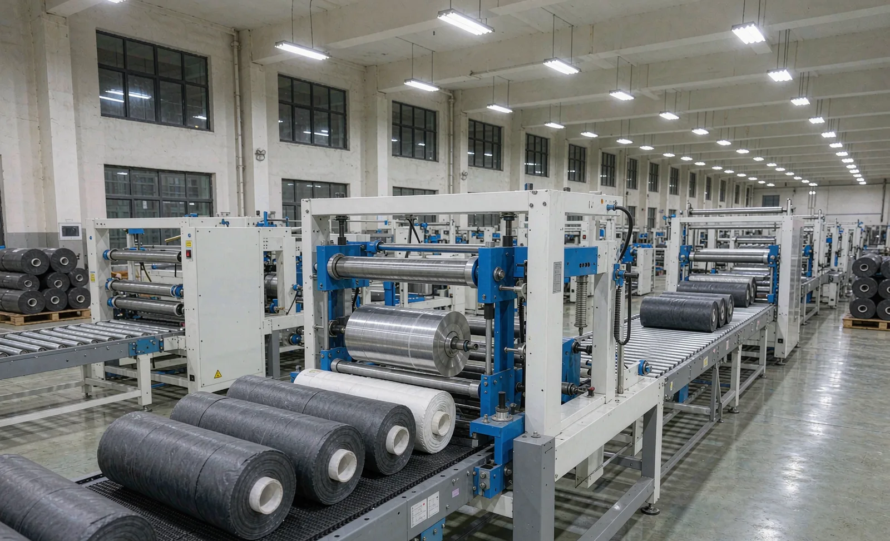
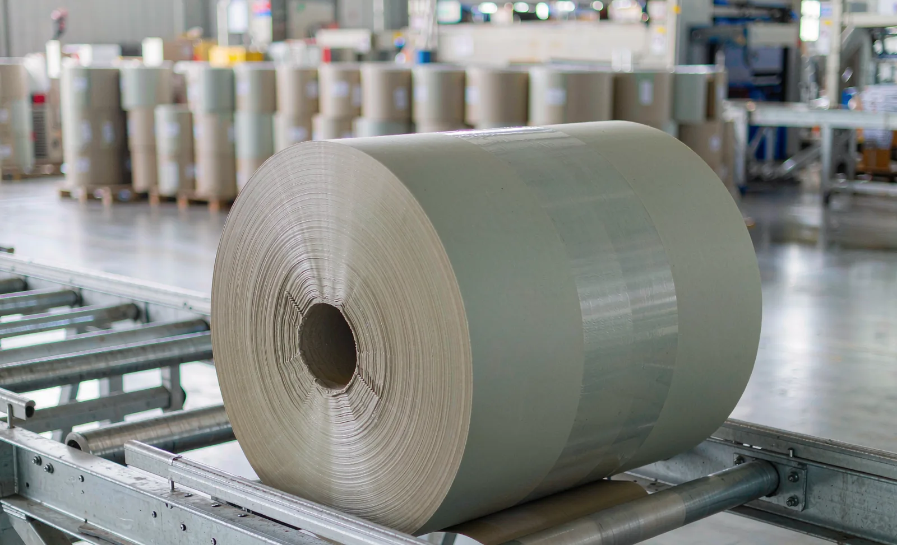

Published September 19, 2026 | By HDPTH Technical Editorial Team

Most converting projects are specified around the slitter rewinder, and the packaging section is added late, often by a different supplier, frequently with an interface nobody owns. The consequence is predictable: the rewinder runs, the rolls pile up, an operator hand-wraps to keep the line moving, and the plant’s real output is set by the slowest manual step rather than by any machine. Packaging is not an accessory. It is the last process step before the customer, and it is where roll damage, label errors and throughput bottlenecks concentrate.
What downstream actually has to do
Automatic roll handling after the rewinder performs four jobs, and a buyer should specify each one explicitly:
- Transfer and orient: take the roll from the rewinder at a defined height and orientation without dropping it or scuffing the outer wraps. This starts with the machine’s own roll unloading system.
- Wrap and protect: apply stretch film around the circumference, or a sleeve with end caps, keeping dust, moisture and handling damage out. Film choice drives a recurring cost per roll, so request a consumption figure and a sample on your own diameter range.
- Weigh, label and code: capture weight or length, print and apply a label, and record the roll against an order — a data task as much as a mechanical one. See inspection and data capture.
- Palletise or stack: build a stable, shippable unit at a height and pattern the customer accepts, then move it to storage with mechanical handling.
Matching throughput and designing the buffer
Rewinders do not deliver rolls evenly. A set of rolls finishes, there is a pause for core loading and threading, then the next set appears. Packaging sized to the rewinder’s average rate will starve during the pause and overload during the burst. The practical answer is two-part: give the packaging section a peak rate comfortably above the rewinder’s cycle rate, and put an accumulation conveyor between them so short mismatches are absorbed. Accumulation is the cheapest capacity you will ever buy.
| Integration item | Why it causes trouble | What to define in writing |
|---|---|---|
| Roll transfer height and orientation | Mismatched heights force manual lifting or a drop | Centre height, roll axis orientation, transfer method |
| Peak versus average throughput | Packaging slows the whole line in bursts | Rolls per hour at smallest diameter, buffer length |
| Label and data fields | Re-keyed data produces wrong labels | Field list, source of truth, print confirmation |
| Control handshake | Neither machine knows the other has stopped | Start/stop/full/empty signals and fault behaviour |
| Pallet pattern and height | Unstable or non-conforming pallets get rejected | Pallet size, layer pattern, max height, wrap tension |
| Space and services | Packaging is usually the widest item in the plant | Footprint, fork access, air, power, extraction |
Data, labels and the interface with your systems
Automatic roll data is where packaging either earns its keep or quietly reintroduces errors. The architecture that works is a single source of truth: the order record created at the rewinder carries product code, customer, length or weight, roll sequence and any quality hold, and flows through to the label printer without re-typing. Print confirmation returns to the control system so an unlabelled roll cannot silently pass. If your customer requires barcode or serialized identification, confirm symbology, print resolution and verification before the machine is built. This is the same discipline as recipe management and line data, extended downstream, and it is what makes remote diagnostics and production reporting meaningful.
Layout, safety and manual handling
Packaging equipment occupies more floor than buyers expect: infeed conveyor, wrapper, labelling station, palletising area and finished pallet storage with fork access. Plan the layout around material flow, using the principles in line layout and material flow, and confirm floor loading, door widths and turning radii before the drawing is frozen. Check the site preparation requirements early — services for the packaging line are often forgotten until installation week. On safety, treat the packaging station as machinery in its own right: guarding for rotating and conveying parts per machine safety and guarding, plus a manual-handling assessment wherever rolls are still lifted or stacked by hand.

Planning a complete converting line?
Send HDPTH your roll sizes, weights, target rolls per hour, pallet pattern and label requirements. We will size the downstream section and define the interface as one scope — machine, wrapper, labelling and palletising.
Submit Your Project InquiryQuestions to put to every supplier
- What is the guaranteed rolls-per-hour rate at my smallest diameter and highest slit count?
- What is the film consumption per roll, and can you show a sample wrapped roll on my diameter range?
- What accumulation length do you recommend between the rewinder and the wrapper?
- Which label fields are populated automatically, and from which system of record?
- What start, stop, full and empty signals are exchanged, and what happens on a downstream fault?
- Who owns the interface if packaging is supplied by a third party?
Refining the rest of the specification?
Continue with our guides to core size and finished roll diameter, roll hardness testing and production capacity planning.
Contact HDPTHFrequently asked questions
Should roll packaging be bought with the slitter rewinder or separately?
Buy it as one scope whenever the wrapped roll is the saleable product. Packaging is where roll handling damage, label errors and throughput mismatches appear, and all three are integration problems rather than equipment problems. If the packaging supplier and the machine supplier are different companies, the interface — roll transfer height, roll orientation, cycle time and data exchange — must be defined in a single document owned by one party before either machine is built.
How much throughput should the packaging line have compared with the rewinder?
The packaging section should be faster than the rewinder’s sustainable average output, not merely equal to it, because the rewinder delivers rolls in bursts. A common rule is to size packaging at roughly 1.2 to 1.5 times the rewinder’s cycle rate and then confirm it with a simulated worst-case run: the smallest rolls, the largest number of slit positions and the shortest cycle. Add an accumulation buffer between the two so neither section stops the other during normal variation.
What wrapping method is right for finished nonwoven rolls?
Most nonwoven and hygiene rolls are wrapped with stretch film, either spirally around the roll circumference or as a full-width sleeve with end protection. The choice depends on required dust and moisture protection, on film cost per roll, and on how the customer unpacks the roll. Ask for a film consumption figure per roll and a sample wrapped roll made on your actual diameter range before signing, because film cost is a recurring operating expense that dwarfs the machine price over time.
What data should the label and packaging system exchange with the machine?
At minimum: product code, order number, roll number, length or weight, diameter, operator shift and any quality hold status, transferred automatically from the rewinder rather than typed in. The cleanest architecture is one source of truth — the rewinder’s order record — feeding the label printer, with print confirmation returned to the machine. Manual label entry at the packaging station reintroduces exactly the errors that automatic recipe control was bought to remove.
What space and services does a packaging line need?
Plan for roll accumulation length, not just machine footprint. A packaging line needs infeed conveyor space, the wrapper, a labelling and weighing station, palletising or stacking area, and finished pallet storage with fork truck access. Services are compressed air, electrical supply and usually a dust extraction connection. Confirm floor loading for the palletised stack and check door widths and turning radii before the layout is frozen — packaging equipment is frequently the widest item in the plant.
Sources
- OSHA: Ergonomics and manual handling guidance for industrial workplaces
- UK HSE: Musculoskeletal disorders — assessment of manual handling risk
- ISO 12100: Risk assessment and risk reduction
- EDANA: the European nonwovens industry association — sector guidance and statistics
- ISO 9001: quality management systems